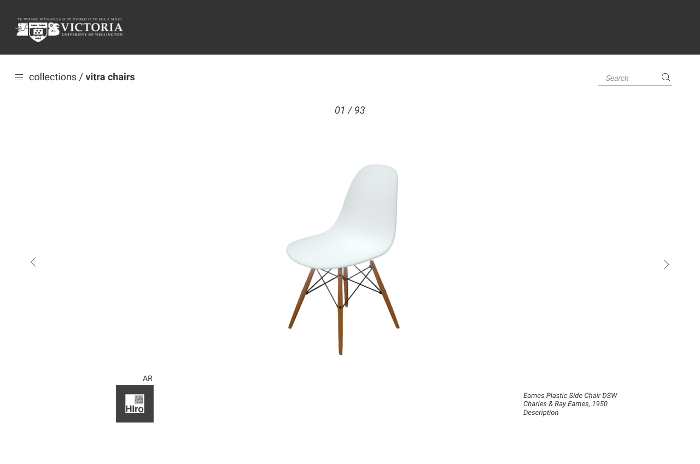
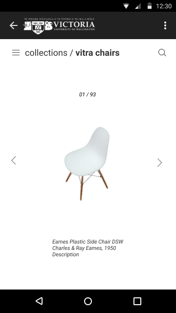
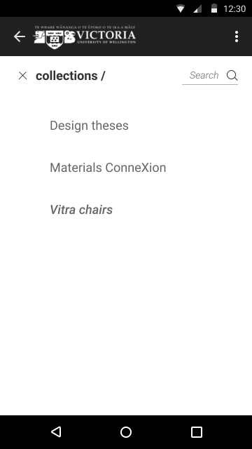

project 1_Long Story Short
Challenge /
The Faculty of Architecture and Design Library holds special collections that are not suitable for text format digitisation.
The A&D Library is looking for an Interactive 3D virtual tool to extend and enhance access to special resources in the library collection.
Parameters:
3D/ holographic aspect with clear, high quality interaction image tool for students to use in relevant format for their research and studies.
Accessible to all via the library website.
More info
Proposal /
In order to satisfy the parameters of the challenge, I decided to go with 2 main features.
For the 3D model inspection for collections that are visuals- like the Vitra chairs collection, three.js's webGL 3D loader would be implemented. This would allow an interactive image tool that is accessible by the existing library website.
To digitalise the miniature models, either photogrammetry or 3D modelling could be used.

For the holographic aspect of the parameter, I decided on an AR function that you can access through scanning a QR code on the desktop webpage with a smart device.
Mock Up /
My thought process on the mock up design was sleek and simple. I wanted the focus to be on the item itself like it was on display in a gallery.


